Hace ya más de un año que vengo desarrollando/produciendo/investigando bajo la multiplicidad de procesos que involucra Lenguaje Frontera: Otros infinitos en las fisuras técnicas de los sistemas. Este proyecto se pudo realizar gracias al Apoyo a la Producción de Arte Contemporáneo del Medialab del CCEBA, apoyo que ganó en el 2023. En esta página quiero dejar constancia de cómo este proyecto se relaciona con distintos procesos dentro de la Inteligencia Artificial, y el detrás de escena. 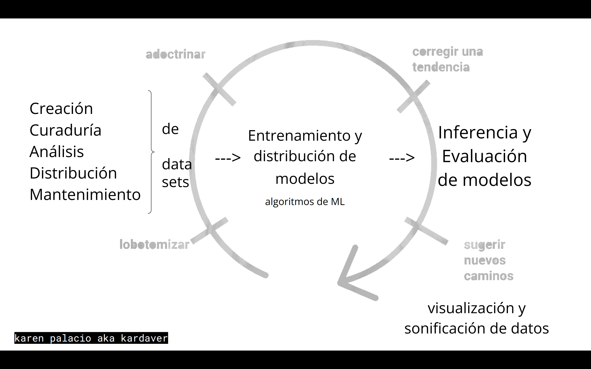
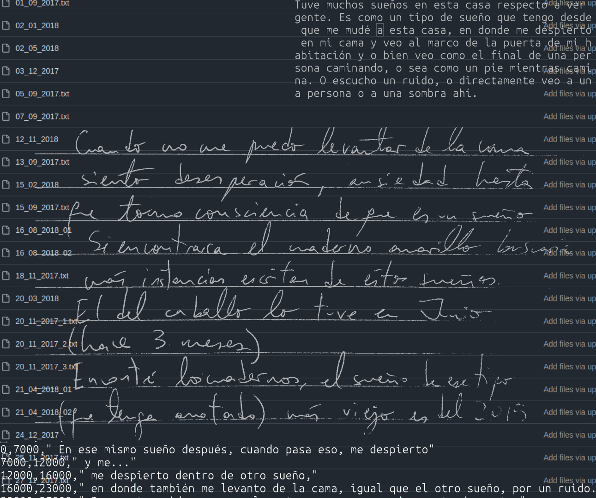
El punto de inicio del proyecto fue la creación de un dataset con textos de transcripciones de sueños, pero a lo largo del proyecto nunca dejé de crear datasets. Ya sea grabándome contando en voz alta mis sueños para generar la parte sonora, como también haciendo idas y vueltas entre la escritura de textos para guiar la generación de imagen y video, y el volcar en descripciones textuales las imágenes generadas.
El dataset original implicó digitalizar mis anotaciones de sueños, que estaban dispersas en decenas de cuadernos y bitácoras artísticas.
En el proceso empecé a notar patrones y temáticas. Luego con metodologías de aprendizaje no supervisado, pude ahondar más en los temas que se repetían en distintos sueños. A partir de esto, encontré un “tipo de sueño” que vengo teniendo hace aproximadamente cinco años, en el cual sueño que despierto y me doy cuenta que estoy soñando, por lo que despierto nuevamente dentro de “otro sueño”, y así en bucles. Ese tipo de sueño estaba muy relacionado con mi interés por las narrativas no lineales, por lo que utilicé esas transcripciones como prompts en gran parte de la generación a partir de texto.
Venía manteniendo otro tipo de archivo personal a partir de mandarme una nota de voz a mí misma en la cual contaba mi sueño al despertarme. Quise recuperar estas grabaciones y ampliarlas con lecturas de las transcripciones, generando un dataset de voz.
Generando imágenes y videos con diferentes modelos, pude armar diferentes datasets a partir de utilizar modelos que realizan tareas de text inversion, perception-language y de prompt engineering. Esto se veía como una exponenciación de datos que tenía disponibles, ya que, por ejemplo, en un momento a partir de 3 minutos de video llegué a armar un dataset de descripciones textuales de 12k filas.
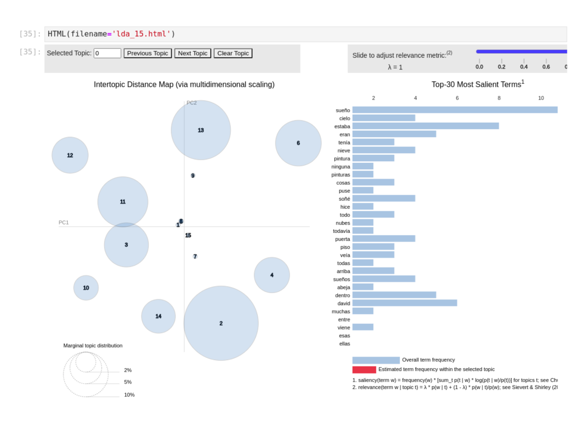
En estas tareas de perception-language me relacioné con diversos modelos indicándoles primero que describan las imágenes que componían los videos que iba armando, y luego que interpreten cada imagen como un sueño y que describan lo que sucedía en ese sueño. Otra cosa que les indiqué fue que transcriban el texto presente en la imagen - incluso si no había texto presente, induciendo alucinaciones del modelo.
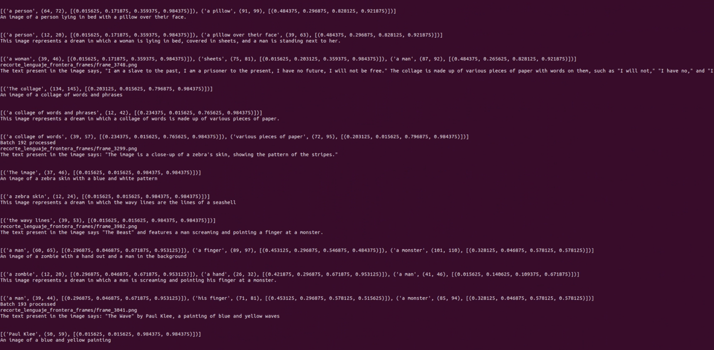
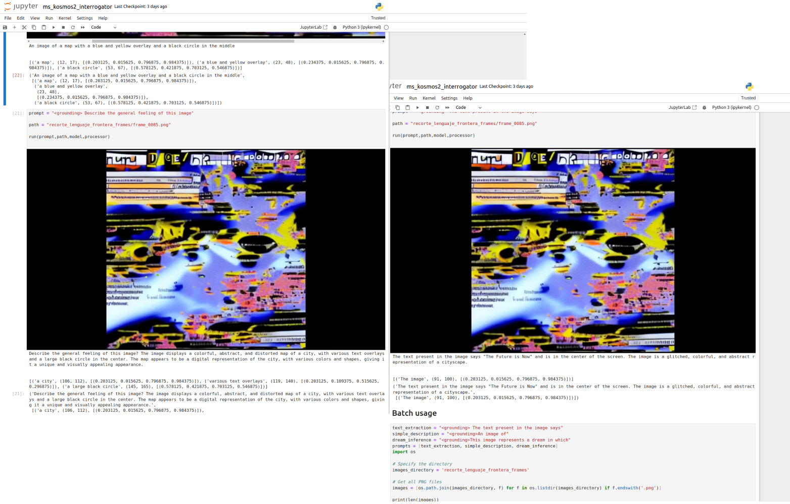
Con estos textos fui generando diversos datasets, que usé para llevar a cabo tareas de aprendizaje no supervisado para poder encontrar más relaciones entre diversos videos, para potenciar posibilidades de montaje semántico, y para visualizar de manera indirecta relaciones entre distintos sueños.
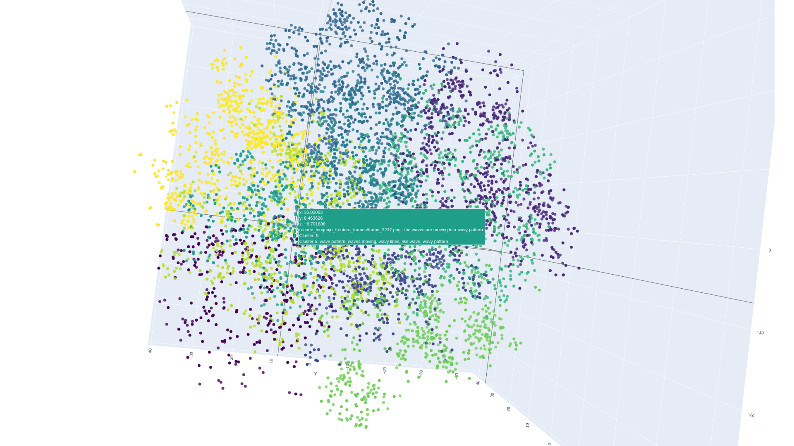
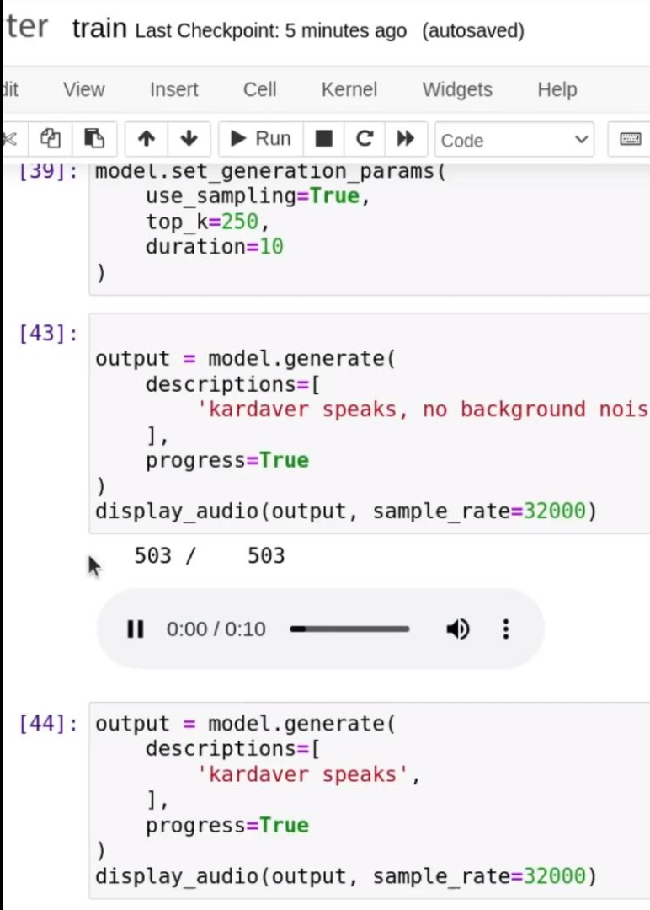
Usando el dataset de grabaciones de mi voz relatando sueños, realicé varios reentrenamientos parciales (fine-tuning) de modelos preentrenados multimodales libres que toman texto y devuelven sonido. Estos modelos estaban pensados para generar música, especializándose en música para comerciales, sonidos FX y cortinas publicitarias. Me relacioné con el concepto de "olvido catastrófico" para accionar sobre las capacidades generativas de estos modelos y obtener variedad en los modos en que los modelos aprenden a generar mi voz.
Por ejemplo, entrenando con pocas épocas, el modelo se vio obligado a memorizar mi voz. En este caso, al incluir en el prompt “kardaver”, podía reproducir exactamente algunas frases frecuentes de las grabaciones, como “soñé que” y “y después”. En el proceso, olvidó todas las otras capacidades de generación, como su rango de estilos y géneros musicales, y su capacidad de generar sonidos FX, quedando un modelo que solo sabía reproducir mi voz, sin poder, por ejemplo, añadirle una percusión de fondo o modificar su tempo. Al entrenar el modelo con muchas épocas y con una versión más grande del dataset de grabaciones de mi voz, el modelo buscó generalizar y conservó sus capacidades previas. Sin embargo, al no haber sido entrenado previamente con ejemplos de la voz humana, asociaba “kardaver” a un ruido granular o un soplido ruidoso. Realizando entrenamientos en puntos medios de este espectro pude obtener varios finetunings distintos, con los cuales producir la parte sonora de la obra.
Ya que diferentes modelos de generación de imagen y video tienen una característica gráfica particular, usé una gran variedad de modelos. Empecé a partir de traducir algunos sueños particulares al inglés y usándolos como prompts para generar videos. Luego, a partir de generar datasets en donde usaba distintas metodologías de text inversion para obtener los prompts que me llevarían a generar los frames de los videos, fui modificando mi estilo de prompteo sabiendo a qué marcas gráficas la arquitectura de stable diffusion asocia a los textos de mis sueños. Además, fui creando flujos que me permitan dar como entrada de un modelo la salida de otro.
En general los modelos stable diffusion 1.5 para abajo, al hablar de mis sueños más frecuentes se encontraban ante el caso de un prompt realmente Out-of-Distribution (OOD) y generaban su versión de ruido/glitch: motivos geométricos simples con patrones repetitivos, muy parecidos a los que se podían observar en las primeras layers de la arquitectura de Deep Dream. Me pareció muy interesante explorar el mantener la generación en un estado de generación al límite - OOD, así como explicar o relatar un sueño nos mantiene al límite de lo decible. El poder relacionarlo con la tradición gráfica de las redes neuronales fue una serendipia muy bienvenida - previamente a la visualizaciones de las primeras layers de Deep Dream, estas componentes gráficas de patrones geométricos simples habían sido un punto de ruptura en campo de computer vision al encontrar una semántica simbólica en los filtros aprendidos por arquictecturas AlexNet (2012) y VGG (2014).
De hecho, usando CLIP interrogator, el mismo modelo CLIP que usa por debajo Stable Diffusion, asocia las imágenes que genera a partir de prompts extremadamente OOD con los tokens “Deep Neural Networks” y “Deep Dream”, “Deep Learning”, y “denoising-diffusion-probabilistic-models”.
Por ejemplo, a partir de una imagen generada a partir de un sueño CLIP interrogator devolvió: “a close up of a blue and white wall with a pattern of wavy lines, 8 k time - lapse functions, heavy impasto technique, half submerged in water, deep dream, made of paperclips, super slowmotion”.
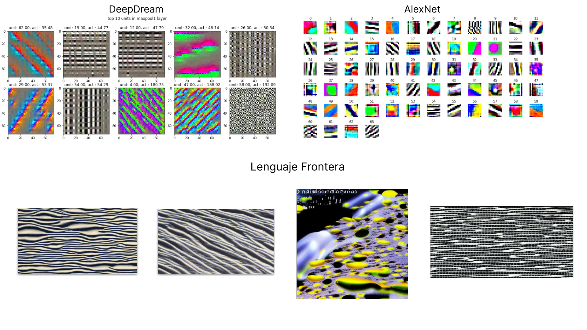
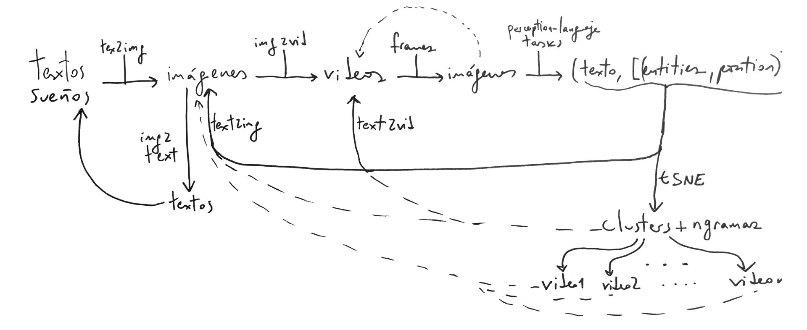
Uno de los ejes de Lenguaje Frontera es poder crear flujos complejos que interrelacionen modelos entre sí y conmigo, para la generación de circuitería híbrida human in the loop. Para esto cada output de cada modelo lo tomé como un potencial input de otros a partir de la idea de semiosis infinita y montaje semántico.
Por un lado establecí bucles de manera horizontal , interconectando modelos de distintas modalidades, y haciendo idas y vueltas entre texto, imagen, video, etc.
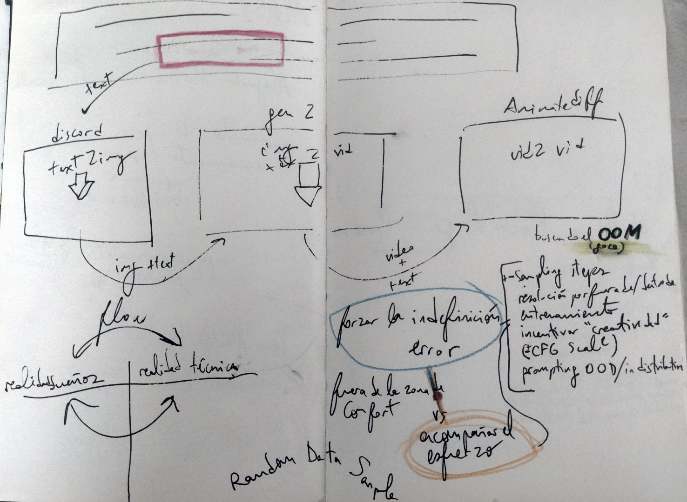
Por ejemplo una parte del flujo se ve de esta forma, en donde a partir de cuatro videos seleccioné frames, y las usé en un flujo img2video.
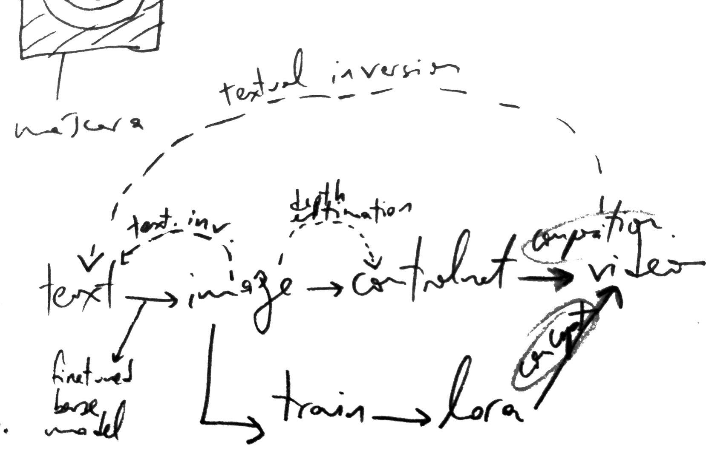
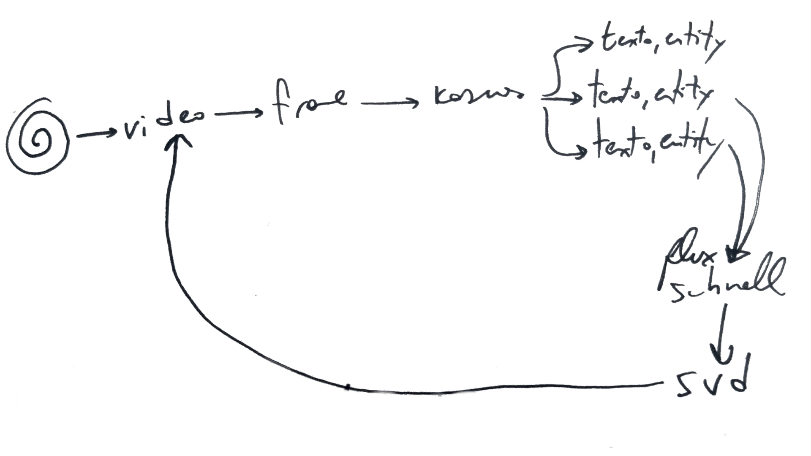
Por otro lado también establecí bucles verticales, centrándome en una modalidad. Interconecté en tiempo de inferencia diferentes modelos text 2 image a partir de realizar image conditioning, o usando una imagen generada por un modelo como máscara para el próximo. Ciertos modelos siempre generan un tipo de estética, que a otros les cuesta, y cada uno tiene un glitch diferente.
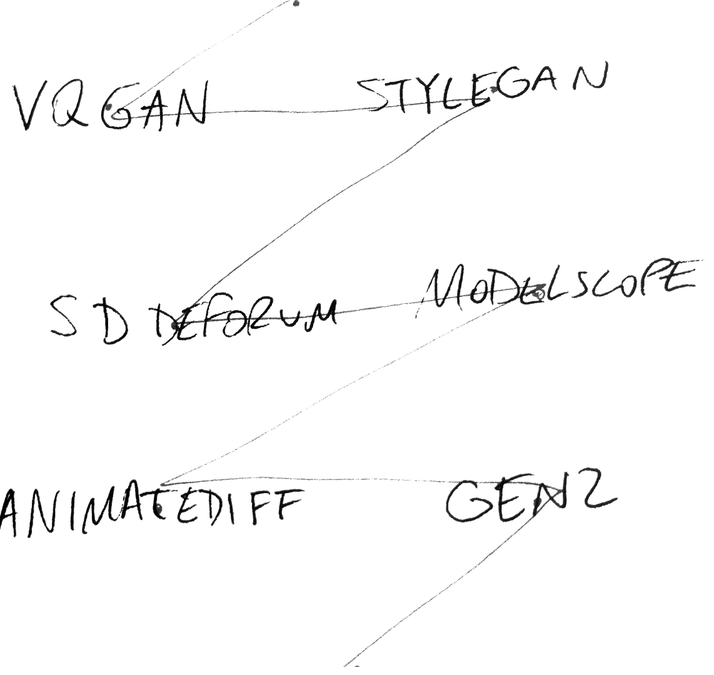
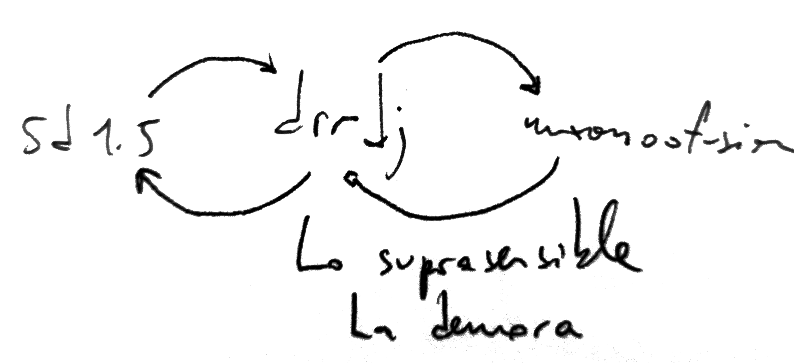
Buscaba en esto romper los moldes estéticos con los cuales fueron pensados, para lograr mantenerme en la zona límite/frontera Out of Distribution (OOD).